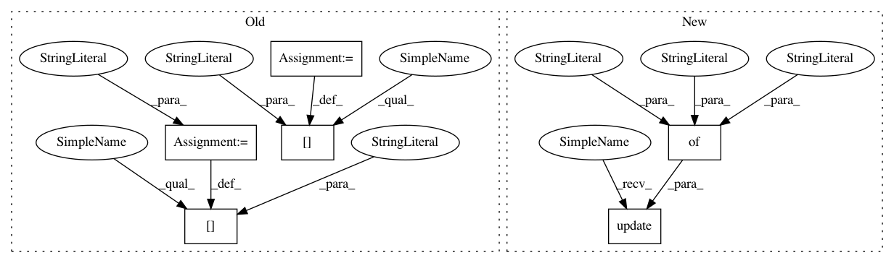

77c08dbc5f557c0548d123992b1321505a64e096,texar/modules/encoders/rnn_encoders.py,BidirectionalRNNEncoder,default_hparams,#,447
Before Change
hparams = RNNEncoderBase.default_hparams()
hparams["rnn_cell_fw"] = layers.default_rnn_cell_hparams()
hparams["rnn_cell_share_config"] = True
hparams["rnn_cell_bw"] = layers.default_rnn_cell_hparams()
hparams["name"] = "bidirectional_rnn_encoder"
return hparams
//TODO(zhiting): add docs of "Returns"
def _build(self, inputs, sequence_length=None,
After Change
Name of the encoder
hparams = RNNEncoderBase.default_hparams()
hparams.update({
"rnn_cell_fw": layers.default_rnn_cell_hparams(),
"rnn_cell_bw": layers.default_rnn_cell_hparams(),
"rnn_cell_share_config": True,
"output_layer_fw": _default_output_layer_hparams(),
"output_layer_bw": _default_output_layer_hparams(),
"output_layer_share_config": True,
"name": "bidirectional_rnn_encoder"
})
return hparams
//TODO(zhiting): add docs of "Returns"
def _build(self,
In pattern: SUPERPATTERN
Frequency: 3
Non-data size: 6
Instances
Project Name: asyml/texar
Commit Name: 77c08dbc5f557c0548d123992b1321505a64e096
Time: 2018-05-29
Author: zhitinghu@gmail.com
File Name: texar/modules/encoders/rnn_encoders.py
Class Name: BidirectionalRNNEncoder
Method Name: default_hparams
Project Name: asyml/texar
Commit Name: 49107396aaa0339f1b2dbf43490b9df0417e4675
Time: 2018-08-22
Author: zhitinghu@gmail.com
File Name: texar/modules/memory/memory_network.py
Class Name: MemNetRNNLike
Method Name: default_hparams
Project Name: asyml/texar
Commit Name: c109f295a23d7ee1b0b6ddd0a04730c144ece462
Time: 2018-05-27
Author: zhitinghu@gmail.com
File Name: texar/modules/encoders/rnn_encoders.py
Class Name: UnidirectionalRNNEncoder
Method Name: default_hparams